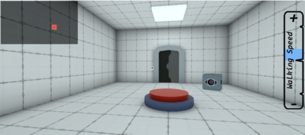
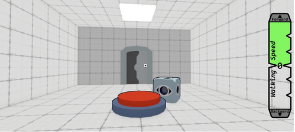

Design Question: What are the graphical advantanges/disadvantages when switching to cel shading? (Bonus Question: Does using a dynamically colored bar fill help communicate the purpose of the speed bar?)


Knowledge Gained: Cel shading makes everything look better. The outlines provided are helpful, as well as simplifying lighting. (Bonus Knowledge: We found having positive speed be green, and negative red, to be helpful in communicating forwards and backwards.)